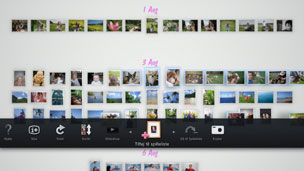

Oprettelse af en spilleliste for valgte fotos
Du kan vælge fotos for at oprette en spilleliste. En spilleliste gør det muligt hver gang at få vist valgte fotos i samme rækkefølge.
Opret en spilleliste
1. |
Fra [Biblioteksområde] vælges et foto, der skal føjes til spillelisten, tryk på  |
||||||||||||
|---|---|---|---|---|---|---|---|---|---|---|---|---|---|
2. |
Brug den venstre pind til at gå til et tomt område i [Spillelisteområde], og tryk derefter på |
||||||||||||
3. |
Vælg følgende indstillinger for spillelisten.
|
 (Tilføj til spilleliste).
(Tilføj til spilleliste). -tasten.
-tasten.
 (Musik) på skærmen XMB™.
(Musik) på skærmen XMB™.Tips
- Indstillingerne for spillelisten kan redigeres senere under
 (Rediger).
(Rediger). - Hver spilleliste kan have sine egne indstillinger.
Føj fotos til en spilleliste
1. |
Vælg de fotos, der skal føjes til spillelisten, tryk på |
|---|---|
2. |
Vælg en spilleliste, og tryk derefter på |
Rediger indstillinger for en spilleliste
Du kan redigere indstillinger for en spilleliste. Vælg den spilleliste, der skal redigeres, tryk på  -tasten, og vælg derefter (Rediger).
-tasten, og vælg derefter (Rediger).
Flyt en spilleliste
Du kan flytte en spilleliste til en anden placering. Vælg den spilleliste, der skal flyttes, tryk på -tasten, og vælg derefter  (Flyt). Flyt spillelisten med den venstre pind.
(Flyt). Flyt spillelisten med den venstre pind.
Tip
Spillelisten kan også flyttes uden brug af menuen. Vælg en spilleliste, og tryk på  -tasten, og hold den nede, mens du flytter spillelisten med den venstre pind.
-tasten, og hold den nede, mens du flytter spillelisten med den venstre pind.
Slet en spilleliste
Hvis du vil slette en spilleliste, skal du vælge den spilleliste, der skal slettes. Tryk på -tasten, og vælg derefter  (Slet).
(Slet).